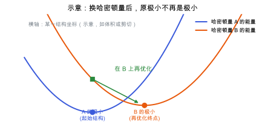

换哈密顿量后的结构再优化
把在哈密顿量 A 下得到的极小，放到哈密顿量 B 上再优化时，晶胞和内坐标为什么会动、动多少说明什么，以及这对后续响应计算意味着什么。
直观阅读需要
- 计算方法由哪些层次组成
- 预测的误差来自哪里 里模型误差与数值误差的区别
完整推导还需要
只是提示，不需要先读完才能往下看。
直觉直观解释
能量极小是相对于某一个能量模型说的。力场、机器学习势、半局域 DFT、DFT+色散，各自定义自己的势能面。在 A 上力为零的结构，在 B 上一般还有残余力和残余应力；再优化会走到 B 的邻近极小。
晶胞体积、轴长、剪切角、分子取向的变化，是“两个势能面在该结构附近差多远”的直接读数。变化很小，说明 A 的极小大致落在 B 的碗底附近；变化很大，说明 A 排序或几何不能直接当成 B 的结果。

| 符号 / 标记 | 是什么 | 图里对应哪部分 |
|---|---|---|
| 蓝曲线 | 哈密顿量 A 的能量随某一结构坐标的变化 | 左侧碗 |
| 橙曲线 | 哈密顿量 B 的能量 | 右侧碗 |
| 蓝圆点 | A 的极小（起始结构） | 蓝曲线最低点 |
| 绿方块→箭头 | 把该结构放到 B 上再优化的路径 | 从绿方块指向橙极小 |
| 橙圆点 | B 的极小（再优化终点） | 橙曲线最低点 |
定义与关键公式数学与推导
在谐近似下，若 R_A 已接近 R_B，漂移大致由 B 在 R_A 处的残余力和残余应力、以及 B 的力常数（与弹性）决定：残余越大、曲率越软，漂移越大。分子晶体的软剪切方向尤其敏感。
在本研究线里的样子对应与边界
- CSP → DFT：搜索与粗排常用力场或 MLIP；精修换到周期 DFT（常含色散）。精修后晶胞胀缩很大，说明粗排极小不在 DFT 碗底附近，窗口与排序都要按 DFT 结果重看（见 晶体结构预测：搜索与排序）。
- 有无色散：同一泛函下，关掉色散再优化，有机分子晶体体积常常明显变大、软方向变软；这是色散改变平衡几何的典型表现（见 色散校正），不是“算错了”。
- 响应计算前：压电、弹性应在与响应同一套能量模型优化到的结构上算。结构来自 A、响应在 B 上算但不让晶胞在 B 上松弛，等于在 B 的应力状态下求导数。
常见坑对应与边界
- 把漂移当成收敛问题：截断能、k 点不够也会让应力不准，但换模型引起的系统胀缩，加大截断能不能消掉（见 预测的误差来自哪里）。
- 只比能量、不看几何：两套模型能量差小，晶胞仍可能差一截；响应量对软方向几何更敏感。
- 混用两套结构与一张量：弹性来自结构 R_1，压电来自结构 R_2，再合成 d，缺少明确的同一结构前提。
检验自己对应与边界
参考资料
论文Beran 2016
尚未实际查阅，目前只是拟查阅书目
论文Hoja et al. 2019
尚未实际查阅，目前只是拟查阅书目
分类计算方法论 · 概念 · 研究线：结构预测与能量景观、压电与响应计算 · 状态：草稿